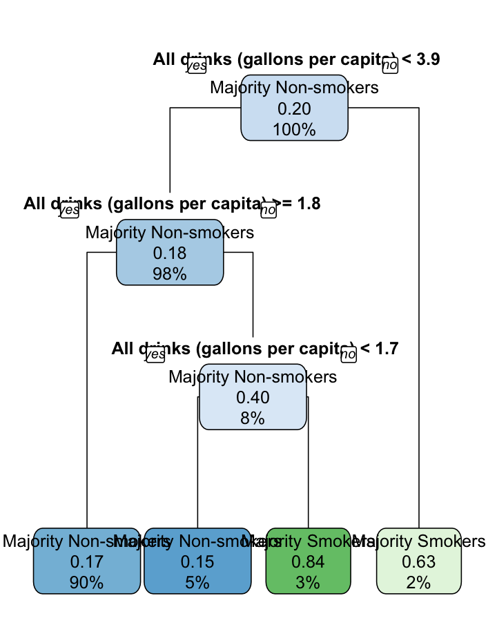
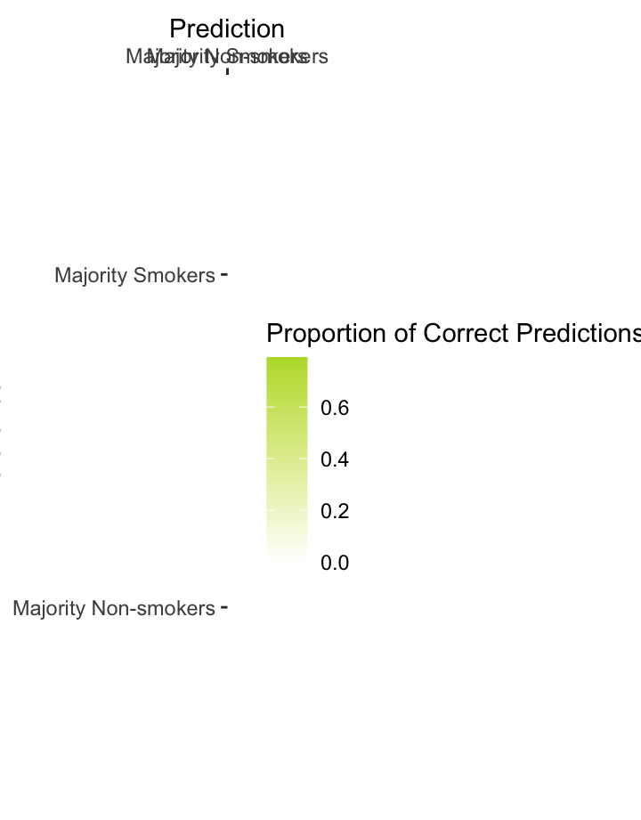
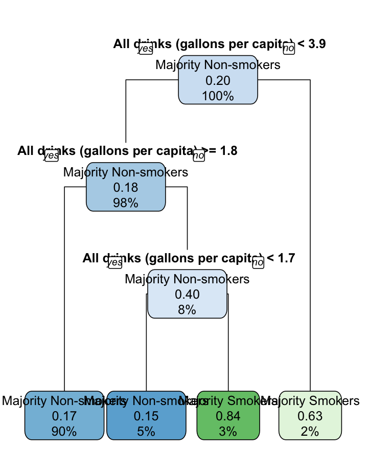
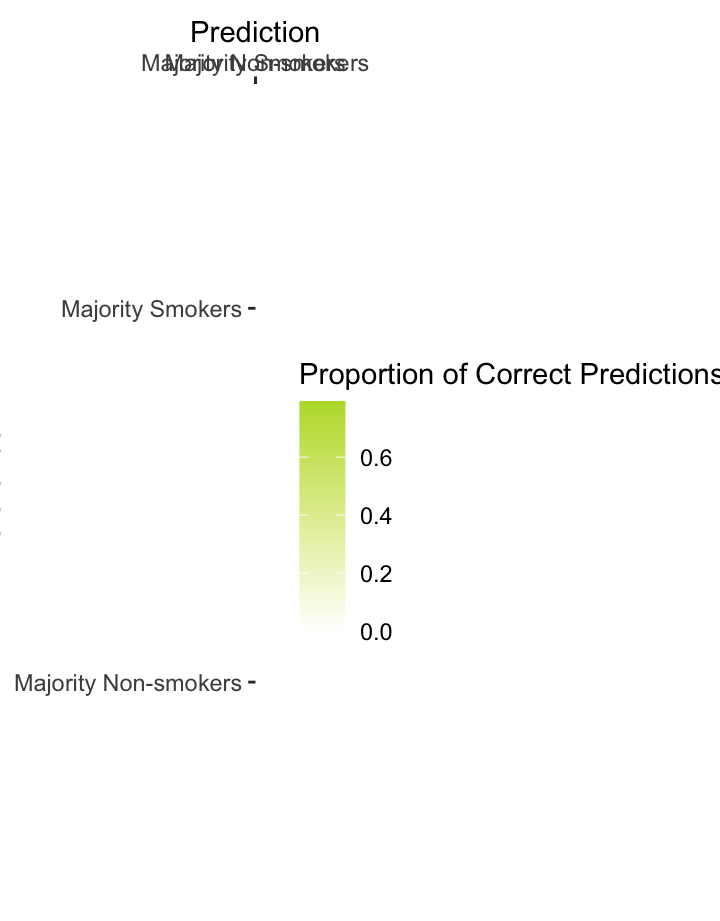
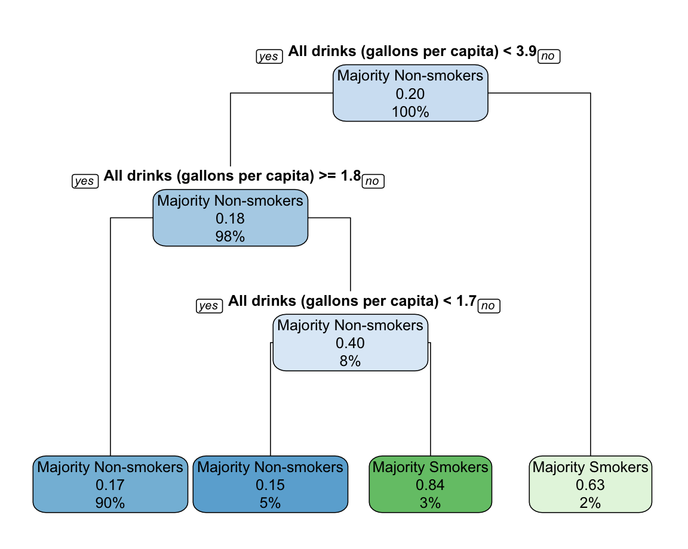
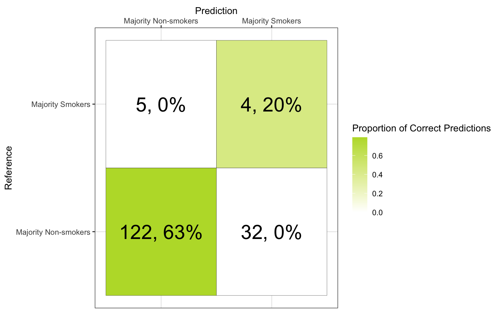

American healthcare institutions like the National Institutes of Health (NIH) and the Centers for Disease Control and Prevention (CDC) have meticulous datasets for alcohol and tobacco consumption in the United States. Yet, there are few analyses that compare the consumption of these substances in tandem over time. In this project, we are interested in analyzing the longitudinal effects and patterns of alcohol and tobacco consumption in the U.S. at national, regional, and state levels.
We begin our investigation by examining alcohol and tobacco consumption trends separately at the national, regional, and state level; our analysis will transition into understanding joint trends across both substances and will be guided by the following questions and hypotheses:
1) What are the preferred alcohol types at the national/regional/state levels? How has this changed over time?
2) How does tobacco consumption change at the national/regional/state levels, over time?
3) Are there particular states that stand out, in terms of consumption of either substance?
4) Do there seem to be any substitutions between alcohol and tobacco?
Our methodology was driven by the aforementioned research questions. To start, we searched and obtained reputable sources for relevant data on alcohol and tobacco consumption in the United States. Next, we prepared the two datasets for analyses. To do that, we cleaned the datasets and appended them with necessary supplemental information, such as state code, corresponding region, and state population size. To learn more about the datasets used, please see Navigating the Data and Analyses. With the transformed datasets, we began our analysis which used the following tools:
1) Static and Dynamic Figures
These figures were made to visually capture alcohol and tobacco consumption trends (both together and separately) across time, states, and regions. Examples are as follows:
2) Regressions
These statistical analysis tools were used in order to examine the validity and statistical significance of the alcohol and tobacco consumption trends gleaned from the static and dynamic visualizations.
3) Decision Tree and Confusion Matrix
A predictive modeling/classification tool was used in order to examine the potential interdependence between alcohol and tobacco consumption trends. A decision tree was generated to determine whether alcohol and tobacco consumption substituted each other or not.
We begin with trends at the national level.
As we can see in the figure below, overall alcohol consumption dropped in the mid-1990s, before continuing to increase. Of note, while beer is the most consumed, consumption of beer is decreasing, whereas wine and spirits consumption appears to be increasing. Nationally, consumption of spirits has almost overtaken beer consumption.
In terms of the specific category of smokers from 1995 to 2000, we see that the majority of people in the U.S. consistently report having never smoked. The percentages of people who smoke some days, as well as former smokers, remain quite flat in comparison to those who smoke every day, which decreases slightly over time; the rates of those who never smoke visually increases slightly from 2005 to 2010. At the national level, it appears that tobacco consumption is dropping while alcohol consumption is increasing from the mid-1990s and onward.
Below, you can toggle the interactive sliders. In the Alcohol Interactive Slider (showing alcohol consumption trends over time), each state appears to alternate between increases and decreases in consumption. However, certain years are marked by widespread decreases, namely 1982 to 1989, 1991, 1993, 2009, and 2010. In the Tobacco Interactive Slider (showing tobacco consumption trends over time), we see sporadic increases in some states. For example, Washington in 1996, California and Utah in 1997, and Maryland in 1998 all demonstrate steep increases. After 2005, states overwhelmingly decrease their smoking habits. By 2010, the final year, all but one state is shown to have a reduction in smoking.
Note. This particular webpage has demonstrated a need for refreshing if the interactive sliders are not showing the first time.
Here, we consider the average alcohol consumption aggregated across the U.S. continental regions: Midwest, Northeast, South, and West.
As we see in the figure below, alcohol consumption trends by region follow a pattern similar to alcohol consumption trends at the national level: the Northeast and West regions of the U.S. consume more alcohol than the South and Midwest regions.
There is a noticeable drop in alcohol consumption between 1995 and 2000. We speculate that this may be due to the organization called Mothers Against Drunk Driving (MADD), founded in 1980, which supported federal legislation called Zero Tolerance. By 1998, Zero Tolerance was passed in each state. The law forbade anyone under 21 from driving with any amount of detectable alcohol. Further, MADD launched a website and convened youth summits between 1995 and 2000. Zero Tolerance, as well as MADD’s overall gain in popularity, might partially explain the apparent drop in overall alcohol consumption in the years 1995 to 2000. However, the drop in overall alcohol consumption appears to be largely driven by a decrease in spirit consumption; beer and wine appear to be consumed at stable levels between 1995 and 2000.
The trends for each category of the smoker, across all regions, are also quite similar. The Northeast shows some evidence of potentially higher rates of tobacco cessation, evidenced by the higher percentage of former smokers. This region also shows the largest disparity between former smokers and those who smoke every day. This visual is quite promising, showing an overall increase in the percentage of individuals who have never smoked and a decrease in those who smoke every day.
While the Northeast and West appear to consume more alcohol, the Midwest and South appear to consume slightly more tobacco. To summarize the trends observed at the regional level, all regions have an increasing percentage of the population who have never smoked, over time. Intriguingly, the overall consumption of alcohol is rebounding from a dip between 1995 and 2000.
Now, we begin a micro-level examination of consumption by state.
For overall alcohol consumption, we observe that New Hampshire and Nevada are consistently the two states with the highest average consumption in terms of gallons per capita. Interestingly, the states with the lowest consumption differ by type. Across all alcohol, Utah and West Virginia have the lowest overall alcohol consumption. With regards to consumption of specific alcohol types, Connecticut and New York appear to drink less beer on average. However, those same two states have a relatively high average consumption of wine and mixed preferences toward spirits. Mississippi and Kansas drink relatively less wine on average, but Mississippi is roughly in the middle in terms of beer consumption.
So, while certain states simply have higher alcohol consumption across all types, other states have clear preferences for a certain type(s). Almost every state drinks more beer than wine or liquor. This is likely due to its accessibility and relatively lower cost.
In terms of tobacco consumption, we visualized the percentage of individuals who report either that they smoke every day or some days. While Utah remains a significant outlier in consuming far less, we see that Kentucky and West Virginia are the states with the highest average consumption over time. While Nevada is still a relatively high consumer, New Hampshire is in the middle.
To summarize the trends observed at the state level, some states have high, low, or even opposite levels of consumption of both substances. More specifically, Nevada is both a high consumption of alcohol and tobacco. On the other hand, Utah has an overall low alcohol and tobacco consumption. West Virginia also has the lowest overall alcohol consumption but has the highest average tobacco consumption over time.
The first alcohol regression model, which aims to understand changes in overall alcohol consumption over time, uses Year as a factor to predict the overall alcohol consumption, with the goal of determining whether there are significant changes over time; the overall consumption value, for all alcohol as well as the specific type of alcohol, was calculated by summing the number of standard drinks within a given year. To begin, we note that the intercept, which is for 1977, indicates estimated consumption as 29,651. The rate of total consumption increases until 1983, after which consumption significantly declines through 2018. By 2018, the total amount of alcohol consumption was down by 2,414, compared to 1977. All years were statistically significant in either the increases, from 1978 through to 1983, or the decreases, from 1984 onward, in the total amount of alcohol consumption, compared to 1977.
More specifically, we can also examine the specific type of consumption. Beer consumption significantly increases every year from 1977, and is shown to decrease from 1993 onward. By 2018, the most recent year in our dataset, beer consumption had decreased by 2,465 across the United States, compared to the intercept’s estimate. Next, estimates for the changes in wine consumption do not show drastic increases or decreases across the years; there is only a slight yet significant drop in wine consumption in 1993 and 1994, compared to the intercept’s level. All other years show significant increases in wine consumption in relation to 1977. Lastly, in terms of spirits, the model shows significant decreases in all years, compared to 1977. Notably however, are the values of the raw estimates approximating each other in the recent years (i.e., leveling off: 2017 showed decrease of 2,188 standard spirit drinks compared to 1977, and 2018 showed a decrease of 2,080 compared to 1977).
To get a better understanding of current smokers in each state, regardless of if it is an every day or sometimes smoking habit, we create a new variable current_smokers, which is the combination of the percentage of those who smoke some days and those who smoke everyday. This variable is indexed out of 100 to make further regressions more comprehensible. We also adjusted the variable of those who have Never smoked to match the formatting of current_smokers. Both variables now can be read as percentages, with the current smoking rate being 24.6%, while 52.5% of people have never smoked.
Our first tobacco regression (R\(^2\) = .902) uses State and Year to predict the current smokers’ percentage. Year is set as a factor, so we can understand year-to-year changes. The intercept, which captures the year 1995 and the state of Alabama, tells us that the estimated percentage of smokers is 24.6%. While smoking habits rose from 1996 to 2003, the rate at which smoking increased declined until 2003, where smoking rates declined. Smoking habits have continued to decline through 2010, where the rate was down 4.5% from the intercept. Every year from 2004 to 2010 showed statistically significant declines in smoking rates. Through analyzing the state portions of this first model, we see that most states have negative values concerning the intercept, showing that those states have lower rates of current smokers. A majority of which are statistically significant. The state of Utah stands out the most, with a -11.8 estimate, predicting that people in Utah only smoke at half the rate of the regression’s intercept. Conversely, Kentucky has the highest rate of current smokers, sitting at a statistically significant +5.3 above the intercept.
In a prior visualization, we saw that the trends of never smoking were on the rise while smoking every day was declining. We observed some statistical evidence proving this with our first tobacco regression, but we can get straight to the point through regressing the never smoked variable. Using State and Year again, we used the variables to predict Never smoked in a second regression. Through this model (R\(^2\) = .831), we see that beginning in 2004, the rate of people never smoking is significantly on the rise. No less than 1.5% more people have never smoked through those years. In 2010, 4.3% more people had never smoked, showing a rising trend in people not smoking. Similar to the output of the first regression, the states of Utah and Kentucky are on opposite ends. Utah has a +17.9 estimate above the intercept, while Kentucky is -6.1, showing that fewer people never smoke in the state.
Note. The discussion of state differences is based on the full regression output which can be reviewed in the Appendix. The visualization above does not show this information.
First, we visualize the consumption of both substances across states. The x-axis captures alcohol consumption, in gallons per capita, and the y-axis captures the percentage of smokers. This dynamic bubble plot captures change in consumption from 1995 to 2010.
Each state is represented as an individual bubble and each bubble is grouped into one of four regions: Midwest (purple), Northeast (blue), South (green), and West (yellow).
Generally, we see that states tend to smoke less over time, evidenced by the slow downward shift of all bubbles. Additionally, it is observed that alcohol consumption somewhat increases, evidenced by the slight shift of bubbles towards the right of the plot.
It is interesting to note how the South begins visually, quite higher than the other regions on the percentage of tobacco consumption from 1995 and onwards. While all regions decrease in tobacco use over time, the South still appears to hold the highest rates in 2010. Concerning alcohol consumption, the West ends 2010 with the lowest consumption per capita (a nod to Utah, for the lowest rates of both tobacco and alcohol consumption!).

To corroborate the insights that we visually gleaned, we aimed to determine whether there were any substitutions of one substance for the other across states, over time. This leads us to the crux of our report: a decision tree that aims to predict alcohol and tobacco use and the interrelations between the two substances.
First, we created a binary variable called smoke_status such that if a state’s population of those who never smoke equaled or exceeded 50%, they were assigned the label of Majority Non-smokers. Naturally, if less than 50% of the population never smoked, those states were labeled as Majority Smokers.
We split our data into a train dataset and a test dataset, running our decision tree with the train data, and observe the following:
Of the 2% of states that drink more than 3.9 gallons of alcohol per capita, there’s a 63% chance they will have more than the majority who smoke.
In contrast, of the 90% of states that drink between 1.8 and 3.9 gallons of alcohol per capita, there is a 17% chance of the population holding a majority of non-smokers.
Moreover, for the 5% of states that do indeed consume less than 1.7 gallons of alcohol, there is a 15% chance they have a population wherein the majority does not smoke.
Finally, of the 3% of states consuming between 1.7 and 1.8 gallons of alcohol per capita, there is an 84% chance of those states having more than the majority who smoke.
At the highest level, the decision tree output provides some evidence indicating that among states with high alcohol consumption, there is a higher probability for a lower percentage of tobacco consumption, and vice versa.

To conclude, we used a confusion matrix to assess the accuracy of classification. We find that with test data, accuracy is 77%. Please see the Appendix for the full confusion matrix output.
Note. While not shown in this present report, accuracy was unsurprisingly, slightly higher at 84% with train data.
Recall that our initial hypotheses were as follows:
1) The U.S. is culturally known for having a greater preference towards beer, so we hypothesized that beer would be the most consumed alcohol at any given time.
2) Given the extensive public health campaigns that highlighted the negative effects of smoking cigarettes in the late 1990s and early 2000s, we expected to see smoking rates decline over time.
3) Since there are clear divisions of rural and urban areas within the U.S., which also follow closely to political identification and values, we predicted that the more rural areas of the country (South and Midwest) would drink and smoke more than the rest of the country.
4) The effectiveness of smoking campaigns may result in smoking rates declining; thus, we hypothesized that, in turn, alcohol consumption rates and smoking rates might covary.
Tobacco
Indeed, while the percentage of individuals who smoke tobacco every day has declined throughout the United States, it remains a costly habit. Using data from 1997 to 2001, the CDC estimated the costs associated with smoking (e.g., due to lost productivity and health expenditures) exceed $167 billion annually, suggesting that anti-smoking campaigns present large opportunities for economic savings (CDC, 2005).
One method to reduce tobacco consumption is through additional taxation. Importantly, however, this intervention has been associated with cross-price effects with alcohol. Specifically, higher cigarette prices were associated with indeed lower smoking rates, but also higher consumption of alcohol (Decker & Schwartz, 2000). While pricing was not measured in the present report, we did observe increases in alcohol consumption and decreased tobacco consumption over time. For this reason, cross-price effects should be further researched. Finally, with the consistent push to reduce tobacco consumption through educational campaigns, digital interventions, and other marketing methods, policymakers should work to mitigate the impact of these substitution effects.
Alcohol
Further, given the increase in alcohol consumption since the mid-1990s, legislation should be considered to combat this trend as well. Snyder et al. (2006) found that people between the ages of 15-26 who reported more exposure to alcohol advertisements consumed more alcohol than those who saw fewer or no such advertisements, on average. For this reason, legislation might be well-suited to target advertisement placement, or more directly, purchasing (e.g., taxes). Unlike the cross-price effect mentioned above, increased alcohol prices were shown to lower both alcohol and smoking participation (Decker & Schwartz, 2000). The uptick in alcohol consumption is a worthwhile trend to proactively address given the consequential outcomes associated with excessive consumption: alcoholism, lost productivity, health care expenses, and law enforcement.
In sum, the decrease in tobacco use is a promising trend given the large societal costs it imparts. More urgent, however, is the re-emergence of greater alcohol use. More should be done to understand the relationship between the two substances, including cross-price effects, and current U.S.-based policies may benefit from re-evaluation.
Alcohol.org. The alcohol industry in data. Retrieved from https://www.alcohol.org/guides/the-alcohol-industry-in-data/
Centers for Disease Control and Prevention (CDC). (2005). Annual smoking-attributable mortality, years of potential life lost, and productivity losses–United States, 1997-2001. MMWR. Morbidity and Mortality Weekly Report, 54(25), 625-628.
Decker, S. L., & Schwartz, A. E. (2000). Cigarettes and alcohol: Substitutes or complements? (No. w7535). National Bureau of Economic Research.
Macinko, J., & Silver, D. (2015). Diffusion of impaired driving laws among US states. American Journal of Public Health, 105(9), 1893-1900.
Snyder, L. B., Milici, F. F., Slater, M., Sun, H., & Strizhakova, Y. (2006). Effects of alcohol advertising exposure on drinking among youth. Archives of Pediatrics and Adolescent Medicine, 160(1), 18-24.
This project was a collaborative effort among Walid Hedidar, Aamia Malik, Michael Murphy, Jon Sirota, Cory Winkler, and Jen Xue. While team members all contributed to commentary and problem-solved challenges along the way, key accomplishments by team member include:
All members participated in code review, narrative formation, and dashboard quality checks.
| Characteristic | Beta | 95% CI1 | p-value |
|---|---|---|---|
| year | |||
| 1977 | — | — | |
| 1978 | 604 | 604, 604 | <0.001 |
| 1979 | 745 | 745, 745 | <0.001 |
| 1980 | 1,148 | 1,148, 1,148 | <0.001 |
| 1981 | 1,389 | 1,389, 1,389 | <0.001 |
| 1982 | 777 | 777, 777 | <0.001 |
| 1983 | 572 | 572, 572 | <0.001 |
| 1984 | -134 | -134, -134 | <0.001 |
| 1985 | -474 | -474, -474 | <0.001 |
| 1986 | -1,039 | -1,039, -1,039 | <0.001 |
| 1987 | -1,427 | -1,427, -1,427 | <0.001 |
| 1988 | -1,990 | -1,990, -1,990 | <0.001 |
| 1989 | -2,665 | -2,665, -2,665 | <0.001 |
| 1990 | -2,417 | -2,417, -2,417 | <0.001 |
| 1991 | -3,729 | -3,729, -3,729 | <0.001 |
| 1992 | -3,878 | -3,878, -3,878 | <0.001 |
| 1993 | -4,550 | -4,550, -4,550 | <0.001 |
| 1994 | -4,870 | -4,870, -4,870 | <0.001 |
| 1995 | -5,318 | -5,318, -5,318 | <0.001 |
| 1996 | -5,242 | -5,242, -5,242 | <0.001 |
| 1997 | -5,365 | -5,365, -5,365 | <0.001 |
| 1998 | -5,261 | -5,261, -5,261 | <0.001 |
| 1999 | -4,945 | -4,945, -4,945 | <0.001 |
| 2000 | -4,732 | -4,732, -4,732 | <0.001 |
| 2001 | -4,796 | -4,796, -4,796 | <0.001 |
| 2002 | -4,444 | -4,444, -4,444 | <0.001 |
| 2003 | -4,228 | -4,228, -4,228 | <0.001 |
| 2004 | -4,015 | -4,015, -4,015 | <0.001 |
| 2005 | -3,855 | -3,855, -3,855 | <0.001 |
| 2006 | -3,364 | -3,364, -3,364 | <0.001 |
| 2007 | -3,036 | -3,036, -3,036 | <0.001 |
| 2008 | -2,882 | -2,882, -2,882 | <0.001 |
| 2009 | -3,098 | -3,098, -3,098 | <0.001 |
| 2010 | -3,226 | -3,226, -3,226 | <0.001 |
| 2011 | -2,929 | -2,929, -2,929 | <0.001 |
| 2012 | -2,522 | -2,522, -2,522 | <0.001 |
| 2013 | -2,586 | -2,586, -2,586 | <0.001 |
| 2014 | -2,588 | -2,588, -2,588 | <0.001 |
| 2015 | -2,517 | -2,517, -2,517 | <0.001 |
| 2016 | -2,283 | -2,283, -2,283 | <0.001 |
| 2017 | -2,415 | -2,415, -2,415 | <0.001 |
| 2018 | -2,571 | -2,571, -2,571 | <0.001 |
|
1
CI = Confidence Interval
|
|||
| Characteristic | Beta | 95% CI1 | p-value |
|---|---|---|---|
| as.factor(year) | |||
| 1977 | — | — | |
| 1978 | 344 | 344, 344 | <0.001 |
| 1979 | 730 | 730, 730 | <0.001 |
| 1980 | 1,043 | 1,043, 1,043 | <0.001 |
| 1981 | 1,342 | 1,342, 1,342 | <0.001 |
| 1982 | 1,197 | 1,197, 1,197 | <0.001 |
| 1983 | 1,204 | 1,204, 1,204 | <0.001 |
| 1984 | 773 | 773, 773 | <0.001 |
| 1985 | 609 | 609, 609 | <0.001 |
| 1986 | 754 | 754, 754 | <0.001 |
| 1987 | 633 | 633, 633 | <0.001 |
| 1988 | 585 | 585, 585 | <0.001 |
| 1989 | 417 | 417, 417 | <0.001 |
| 1990 | 690 | 690, 690 | <0.001 |
| 1991 | 235 | 235, 235 | <0.001 |
| 1992 | 104 | 104, 104 | <0.001 |
| 1993 | -121 | -121, -121 | <0.001 |
| 1994 | -209 | -209, -209 | <0.001 |
| 1995 | -469 | -469, -469 | <0.001 |
| 1996 | -503 | -503, -503 | <0.001 |
| 1997 | -581 | -581, -581 | <0.001 |
| 1998 | -493 | -493, -493 | <0.001 |
| 1999 | -377 | -377, -377 | <0.001 |
| 2000 | -332 | -332, -332 | <0.001 |
| 2001 | -353 | -353, -353 | <0.001 |
| 2002 | -327 | -327, -327 | <0.001 |
| 2003 | -443 | -443, -443 | <0.001 |
| 2004 | -488 | -488, -488 | <0.001 |
| 2005 | -690 | -690, -690 | <0.001 |
| 2006 | -545 | -545, -545 | <0.001 |
| 2007 | -420 | -420, -420 | <0.001 |
| 2008 | -491 | -491, -491 | <0.001 |
| 2009 | -863 | -863, -863 | <0.001 |
| 2010 | -1,197 | -1,197, -1,197 | <0.001 |
| 2011 | -1,372 | -1,372, -1,372 | <0.001 |
| 2012 | -1,304 | -1,304, -1,304 | <0.001 |
| 2013 | -1,581 | -1,581, -1,581 | <0.001 |
| 2014 | -1,730 | -1,730, -1,730 | <0.001 |
| 2015 | -1,854 | -1,854, -1,854 | <0.001 |
| 2016 | -1,979 | -1,979, -1,979 | <0.001 |
| 2017 | -2,207 | -2,207, -2,207 | <0.001 |
| 2018 | -2,465 | -2,465, -2,465 | <0.001 |
|
1
CI = Confidence Interval
|
|||
| Characteristic | Beta | 95% CI1 | p-value |
|---|---|---|---|
| as.factor(year) | |||
| 1977 | — | — | |
| 1978 | 179 | 179, 179 | <0.001 |
| 1979 | 294 | 294, 294 | <0.001 |
| 1980 | 468 | 468, 468 | <0.001 |
| 1981 | 605 | 605, 605 | <0.001 |
| 1982 | 649 | 649, 649 | <0.001 |
| 1983 | 647 | 647, 647 | <0.001 |
| 1984 | 720 | 720, 720 | <0.001 |
| 1985 | 833 | 833, 833 | <0.001 |
| 1986 | 937 | 937, 937 | <0.001 |
| 1987 | 837 | 837, 837 | <0.001 |
| 1988 | 677 | 677, 677 | <0.001 |
| 1989 | 441 | 441, 441 | <0.001 |
| 1990 | 355 | 355, 355 | <0.001 |
| 1991 | 115 | 115, 115 | <0.001 |
| 1992 | 129 | 129, 129 | <0.001 |
| 1993 | -20 | -20, -20 | <0.001 |
| 1994 | -26 | -26, -26 | <0.001 |
| 1995 | 18 | 18, 18 | <0.001 |
| 1996 | 167 | 167, 167 | <0.001 |
| 1997 | 177 | 177, 177 | <0.001 |
| 1998 | 198 | 198, 198 | <0.001 |
| 1999 | 373 | 373, 373 | <0.001 |
| 2000 | 393 | 393, 393 | <0.001 |
| 2001 | 379 | 379, 379 | <0.001 |
| 2002 | 536 | 536, 536 | <0.001 |
| 2003 | 649 | 649, 649 | <0.001 |
| 2004 | 776 | 776, 776 | <0.001 |
| 2005 | 869 | 869, 869 | <0.001 |
| 2006 | 970 | 970, 970 | <0.001 |
| 2007 | 1,048 | 1,048, 1,048 | <0.001 |
| 2008 | 1,099 | 1,099, 1,099 | <0.001 |
| 2009 | 1,181 | 1,181, 1,181 | <0.001 |
| 2010 | 1,218 | 1,218, 1,218 | <0.001 |
| 2011 | 1,411 | 1,411, 1,411 | <0.001 |
| 2012 | 1,510 | 1,510, 1,510 | <0.001 |
| 2013 | 1,552 | 1,552, 1,552 | <0.001 |
| 2014 | 1,586 | 1,586, 1,586 | <0.001 |
| 2015 | 1,621 | 1,621, 1,621 | <0.001 |
| 2016 | 1,715 | 1,715, 1,715 | <0.001 |
| 2017 | 1,705 | 1,705, 1,705 | <0.001 |
| 2018 | 1,665 | 1,665, 1,665 | <0.001 |
|
1
CI = Confidence Interval
|
|||
| Characteristic | Beta | 95% CI1 | p-value |
|---|---|---|---|
| as.factor(year) | |||
| 1977 | — | — | |
| 1978 | 87 | 87, 87 | <0.001 |
| 1979 | -228 | -228, -228 | <0.001 |
| 1980 | -314 | -314, -314 | <0.001 |
| 1981 | -442 | -442, -442 | <0.001 |
| 1982 | -978 | -978, -978 | <0.001 |
| 1983 | -1,167 | -1,167, -1,167 | <0.001 |
| 1984 | -1,565 | -1,565, -1,565 | <0.001 |
| 1985 | -1,881 | -1,881, -1,881 | <0.001 |
| 1986 | -2,658 | -2,658, -2,658 | <0.001 |
| 1987 | -2,824 | -2,824, -2,824 | <0.001 |
| 1988 | -3,162 | -3,162, -3,162 | <0.001 |
| 1989 | -3,417 | -3,417, -3,417 | <0.001 |
| 1990 | -3,328 | -3,328, -3,328 | <0.001 |
| 1991 | -3,947 | -3,947, -3,947 | <0.001 |
| 1992 | -4,009 | -4,009, -4,009 | <0.001 |
| 1993 | -4,312 | -4,312, -4,312 | <0.001 |
| 1994 | -4,537 | -4,537, -4,537 | <0.001 |
| 1995 | -4,775 | -4,775, -4,775 | <0.001 |
| 1996 | -4,833 | -4,833, -4,833 | <0.001 |
| 1997 | -4,894 | -4,894, -4,894 | <0.001 |
| 1998 | -4,921 | -4,921, -4,921 | <0.001 |
| 1999 | -4,869 | -4,869, -4,869 | <0.001 |
| 2000 | -4,730 | -4,730, -4,730 | <0.001 |
| 2001 | -4,757 | -4,757, -4,757 | <0.001 |
| 2002 | -4,597 | -4,597, -4,597 | <0.001 |
| 2003 | -4,406 | -4,406, -4,406 | <0.001 |
| 2004 | -4,277 | -4,277, -4,277 | <0.001 |
| 2005 | -4,040 | -4,040, -4,040 | <0.001 |
| 2006 | -3,812 | -3,812, -3,812 | <0.001 |
| 2007 | -3,675 | -3,675, -3,675 | <0.001 |
| 2008 | -3,534 | -3,534, -3,534 | <0.001 |
| 2009 | -3,482 | -3,482, -3,482 | <0.001 |
| 2010 | -3,370 | -3,370, -3,370 | <0.001 |
| 2011 | -3,116 | -3,116, -3,116 | <0.001 |
| 2012 | -2,890 | -2,890, -2,890 | <0.001 |
| 2013 | -2,755 | -2,755, -2,755 | <0.001 |
| 2014 | -2,666 | -2,666, -2,666 | <0.001 |
| 2015 | -2,521 | -2,521, -2,521 | <0.001 |
| 2016 | -2,296 | -2,296, -2,296 | <0.001 |
| 2017 | -2,188 | -2,188, -2,188 | <0.001 |
| 2018 | -2,080 | -2,080, -2,080 | <0.001 |
|
1
CI = Confidence Interval
|
|||
| Characteristic | Beta | 95% CI1 | p-value |
|---|---|---|---|
| year | |||
| 1995 | — | — | |
| 1996 | 1.4 | 0.88, 1.8 | <0.001 |
| 1997 | 1.0 | 0.53, 1.5 | <0.001 |
| 1998 | 0.76 | 0.29, 1.2 | 0.001 |
| 1999 | 0.60 | 0.14, 1.1 | 0.011 |
| 2000 | 0.36 | -0.10, 0.83 | 0.13 |
| 2001 | 0.85 | 0.39, 1.3 | <0.001 |
| 2002 | 0.88 | 0.42, 1.4 | <0.001 |
| 2003 | 0.02 | -0.44, 0.49 | >0.9 |
| 2004 | -1.0 | -1.5, -0.55 | <0.001 |
| 2005 | -1.5 | -1.9, -1.0 | <0.001 |
| 2006 | -2.1 | -2.6, -1.7 | <0.001 |
| 2007 | -2.4 | -2.9, -1.9 | <0.001 |
| 2008 | -3.5 | -3.9, -3.0 | <0.001 |
| 2009 | -3.9 | -4.4, -3.4 | <0.001 |
| 2010 | -4.5 | -5.0, -4.1 | <0.001 |
| State | |||
| Alabama | — | — | |
| Alaska | 1.1 | 0.31, 1.9 | 0.007 |
| Arizona | -3.9 | -4.7, -3.0 | <0.001 |
| Arkansas | 1.0 | 0.15, 1.8 | 0.020 |
| California | -7.8 | -8.6, -6.9 | <0.001 |
| Colorado | -3.7 | -4.5, -2.9 | <0.001 |
| Connecticut | -5.1 | -5.9, -4.3 | <0.001 |
| Delaware | -1.3 | -2.1, -0.44 | 0.003 |
| Florida | -2.7 | -3.5, -1.9 | <0.001 |
| Georgia | -2.5 | -3.3, -1.7 | <0.001 |
| Hawaii | -5.6 | -6.4, -4.8 | <0.001 |
| Idaho | -4.7 | -5.5, -3.9 | <0.001 |
| Illinois | -1.9 | -2.7, -1.0 | <0.001 |
| Indiana | 2.1 | 1.3, 2.9 | <0.001 |
| Iowa | -2.4 | -3.2, -1.6 | <0.001 |
| Kansas | -3.6 | -4.4, -2.8 | <0.001 |
| Kentucky | 5.3 | 4.4, 6.1 | <0.001 |
| Louisiana | 0.04 | -0.78, 0.86 | >0.9 |
| Maine | -1.9 | -2.7, -1.1 | <0.001 |
| Maryland | -4.5 | -5.3, -3.7 | <0.001 |
| Massachusetts | -5.1 | -5.9, -4.2 | <0.001 |
| Michigan | -0.14 | -1.0, 0.68 | 0.7 |
| Minnesota | -4.4 | -5.2, -3.6 | <0.001 |
| Mississippi | 0.29 | -0.52, 1.1 | 0.5 |
| Missouri | 1.6 | 0.75, 2.4 | <0.001 |
| Montana | -3.8 | -4.6, -3.0 | <0.001 |
| Nebraska | -3.2 | -4.0, -2.4 | <0.001 |
| Nevada | 1.7 | 0.86, 2.5 | <0.001 |
| New Hampshire | -2.5 | -3.3, -1.7 | <0.001 |
| New Jersey | -5.0 | -5.8, -4.2 | <0.001 |
| New Mexico | -2.5 | -3.3, -1.7 | <0.001 |
| New York | -3.1 | -3.9, -2.3 | <0.001 |
| North Carolina | 0.13 | -0.69, 0.94 | 0.8 |
| North Dakota | -3.0 | -3.8, -2.1 | <0.001 |
| Ohio | 1.0 | 0.15, 1.8 | 0.020 |
| Oklahoma | 1.2 | 0.36, 2.0 | 0.005 |
| Oregon | -4.0 | -4.8, -3.2 | <0.001 |
| Pennsylvania | -0.80 | -1.6, 0.02 | 0.055 |
| Rhode Island | -2.9 | -3.7, -2.1 | <0.001 |
| South Carolina | -0.30 | -1.1, 0.52 | 0.5 |
| South Dakota | -2.7 | -3.5, -1.9 | <0.001 |
| Tennessee | 1.3 | 0.44, 2.1 | 0.003 |
| Texas | -3.0 | -3.8, -2.1 | <0.001 |
| Utah | -12 | -13, -11 | <0.001 |
| Vermont | -3.6 | -4.4, -2.8 | <0.001 |
| Virginia | -2.6 | -3.4, -1.7 | <0.001 |
| Washington | -4.3 | -5.1, -3.5 | <0.001 |
| West Virginia | 3.2 | 2.3, 4.0 | <0.001 |
| Wisconsin | -1.8 | -2.6, -1.0 | <0.001 |
| Wyoming | -1.4 | -2.2, -0.59 | <0.001 |
|
1
CI = Confidence Interval
|
|||
| Characteristic | Beta | 95% CI1 | p-value |
|---|---|---|---|
| year | |||
| 1995 | — | — | |
| 1996 | -0.26 | -1.0, 0.50 | 0.5 |
| 1997 | -0.03 | -0.78, 0.73 | >0.9 |
| 1998 | -0.06 | -0.81, 0.70 | 0.9 |
| 1999 | 0.42 | -0.34, 1.2 | 0.3 |
| 2000 | 0.03 | -0.73, 0.78 | >0.9 |
| 2001 | -0.76 | -1.5, 0.00 | 0.050 |
| 2002 | -0.74 | -1.5, 0.01 | 0.054 |
| 2003 | -0.19 | -0.95, 0.56 | 0.6 |
| 2004 | 2.2 | 1.5, 3.0 | <0.001 |
| 2005 | 1.6 | 0.82, 2.3 | <0.001 |
| 2006 | 2.3 | 1.5, 3.0 | <0.001 |
| 2007 | 2.6 | 1.9, 3.4 | <0.001 |
| 2008 | 3.3 | 2.6, 4.1 | <0.001 |
| 2009 | 3.4 | 2.7, 4.2 | <0.001 |
| 2010 | 4.3 | 3.5, 5.0 | <0.001 |
| State | |||
| Alabama | — | — | |
| Alaska | -4.8 | -6.1, -3.5 | <0.001 |
| Arizona | 2.9 | 1.6, 4.2 | <0.001 |
| Arkansas | -2.4 | -3.7, -1.1 | <0.001 |
| California | 5.5 | 4.1, 6.8 | <0.001 |
| Colorado | 1.0 | -0.36, 2.3 | 0.2 |
| Connecticut | -1.2 | -2.6, 0.10 | 0.070 |
| Delaware | -2.4 | -3.8, -1.1 | <0.001 |
| Florida | -1.8 | -3.1, -0.46 | 0.008 |
| Georgia | 4.3 | 3.0, 5.6 | <0.001 |
| Hawaii | 3.5 | 2.1, 4.8 | <0.001 |
| Idaho | 3.9 | 2.5, 5.2 | <0.001 |
| Illinois | 0.83 | -0.49, 2.2 | 0.2 |
| Indiana | -2.9 | -4.2, -1.6 | <0.001 |
| Iowa | 1.2 | -0.14, 2.5 | 0.081 |
| Kansas | 3.3 | 1.9, 4.6 | <0.001 |
| Kentucky | -6.1 | -7.4, -4.8 | <0.001 |
| Louisiana | 1.9 | 0.52, 3.2 | 0.006 |
| Maine | -6.0 | -7.4, -4.7 | <0.001 |
| Maryland | 3.8 | 2.4, 5.1 | <0.001 |
| Massachusetts | -1.0 | -2.3, 0.34 | 0.14 |
| Michigan | -2.9 | -4.2, -1.5 | <0.001 |
| Minnesota | 1.7 | 0.38, 3.0 | 0.012 |
| Mississippi | 1.3 | -0.04, 2.6 | 0.057 |
| Missouri | -3.7 | -5.0, -2.3 | <0.001 |
| Montana | -0.84 | -2.2, 0.48 | 0.2 |
| Nebraska | 2.1 | 0.81, 3.5 | 0.002 |
| Nevada | -4.8 | -6.1, -3.5 | <0.001 |
| New Hampshire | -4.8 | -6.2, -3.5 | <0.001 |
| New Jersey | 2.6 | 1.3, 4.0 | <0.001 |
| New Mexico | -0.02 | -1.3, 1.3 | >0.9 |
| New York | 0.86 | -0.47, 2.2 | 0.2 |
| North Carolina | -1.2 | -2.5, 0.11 | 0.073 |
| North Dakota | 0.64 | -0.69, 2.0 | 0.3 |
| Ohio | -2.3 | -3.7, -1.0 | <0.001 |
| Oklahoma | -0.16 | -1.5, 1.2 | 0.8 |
| Oregon | -0.92 | -2.3, 0.40 | 0.2 |
| Pennsylvania | -1.4 | -2.7, -0.03 | 0.045 |
| Rhode Island | -2.8 | -4.1, -1.5 | <0.001 |
| South Carolina | 0.41 | -0.92, 1.7 | 0.5 |
| South Dakota | 0.53 | -0.80, 1.9 | 0.4 |
| Tennessee | -0.12 | -1.4, 1.2 | 0.9 |
| Texas | 4.1 | 2.7, 5.4 | <0.001 |
| Utah | 18 | 16, 19 | <0.001 |
| Vermont | -4.1 | -5.4, -2.8 | <0.001 |
| Virginia | 1.1 | -0.26, 2.4 | 0.12 |
| Washington | -0.19 | -1.5, 1.1 | 0.8 |
| West Virginia | -5.0 | -6.3, -3.6 | <0.001 |
| Wisconsin | -2.4 | -3.7, -1.1 | <0.001 |
| Wyoming | -1.5 | -2.8, -0.19 | 0.025 |
|
1
CI = Confidence Interval
|
|||
Confusion Matrix and Statistics
Reference
Prediction Majority Non-smokers Majority Smokers
Majority Non-smokers 122 5
Majority Smokers 32 4
Accuracy : 0.773
95% CI : (0.701, 0.8349)
No Information Rate : 0.9448
P-Value [Acc > NIR] : 1
Kappa : 0.0981
Mcnemar's Test P-Value : 1.917e-05
Sensitivity : 0.7922
Specificity : 0.4444
Pos Pred Value : 0.9606
Neg Pred Value : 0.1111
Prevalence : 0.9448
Detection Rate : 0.7485
Detection Prevalence : 0.7791
Balanced Accuracy : 0.6183
'Positive' Class : Majority Non-smokers